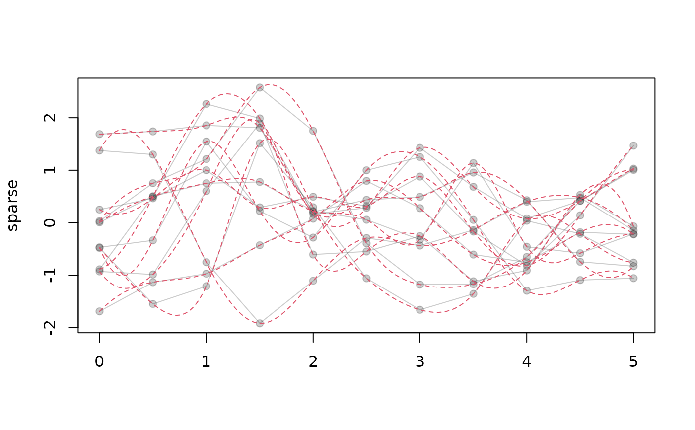

Change the internal representation of a tf-object so that it
uses a different grid of argument values (arg). Useful for
thinning out dense grids to make data smaller
filling out sparse grids to make derivatives/integrals and locating extrema or zero crossings more accurate (... if the interpolation works well ...)
making irregular functional data into (more) regular data.
For tfd-objects, this is just syntactic sugar for tfd(object, arg = arg).
To inter/extrapolate more reliably and avoid NAs, call
tf_interpolate with evaluator = tf_approx_fill_extend.
For tfb-objects, this re-evaluates basis functions on the new grid which can
speed up subsequent computations if they all use that grid.
NB: To reliably impute very irregular data on a regular, common grid,
you'll be better off doing FPCA-based imputation or other model-based
approaches in most cases.
Usage
tf_interpolate(object, arg, ...)
# S3 method for tfb
tf_interpolate(object, arg, ...)
# S3 method for tfd
tf_interpolate(object, arg, ...)Arguments
- object
an object inheriting from
tf- arg
a vector of argument values on which to evaluate the functions in
object- ...
additional arguments handed over to
tfdortfb, for the construction of the returned object
See also
tf_rebase(), which is more general.
Other tidyfun inter/extrapolation functions:
tf_approx_linear(),
tf_evaluate()
Examples
# \donttest{
# thinning out a densely observed tfd
dense <- tf_rgp(10, arg = seq(0, 1, length.out = 1001))
less_dense <- tf_interpolate(dense, arg = seq(0, 1, length.out = 101))
dense
#> tfd[10] on (0,1) based on 1001 evaluations each
#> interpolation by tf_approx_linear
#> 1: (0.000, 0.98);(0.001, 1.04);(0.002, 1.00); ...
#> 2: (0.000,-0.77);(0.001,-0.79);(0.002,-0.82); ...
#> 3: (0.000, 0.24);(0.001, 0.23);(0.002, 0.23); ...
#> 4: (0.000,-0.23);(0.001,-0.23);(0.002,-0.27); ...
#> 5: (0.000, 0.16);(0.001, 0.14);(0.002, 0.15); ...
#> [....] (5 not shown)
less_dense
#> tfd[10] on (0,1) based on 101 evaluations each
#> interpolation by tf_approx_linear
#> 1: (0.00, 0.98);(0.01, 0.98);(0.02, 0.94); ...
#> 2: (0.00,-0.77);(0.01,-0.71);(0.02,-0.68); ...
#> 3: (0.00, 0.24);(0.01, 0.23);(0.02, 0.22); ...
#> 4: (0.00,-0.23);(0.01,-0.27);(0.02,-0.33); ...
#> 5: (0.00,0.157);(0.01,0.047);(0.02,0.022); ...
#> [....] (5 not shown)
# filling out sparse data (use a suitable evaluator-function!)
sparse <- tf_rgp(10, arg = seq(0, 5, length.out = 11))
plot(sparse, points = TRUE)
# change evaluator for better interpolation
tfd(sparse, evaluator = tf_approx_spline) |>
tf_interpolate(arg = seq(0, 5, length.out = 201)) |>
lines(col = 2, lty = 2)

set.seed(1860)
sparse_irregular <- tf_rgp(5) |>
tf_sparsify(0.5) |>
tf_jiggle()
tf_interpolate(sparse_irregular, arg = seq(0, 1, length.out = 51))
#> Warning: 33 evaluations were NA, returning irregular tfd.
#> irregular tfd[5] on (0,1) based on 39 to 48 (mean: 44) evaluations each
#> interpolation by tf_approx_linear
#> 1: (0.14, -1.4);(0.16, -1.3);(0.18, -1.3); ...
#> 2: (0.02, 1.7);(0.04, 1.6);(0.06, 1.5); ...
#> 3: (0.08, 0.93);(0.10, 1.03);(0.12, 1.11); ...
#> 4: (0.04, -0.14);(0.06, -0.29);(0.08, -0.40); ...
#> 5: (0.12, 0.049);(0.14,-0.035);(0.16,-0.098); ...
# }